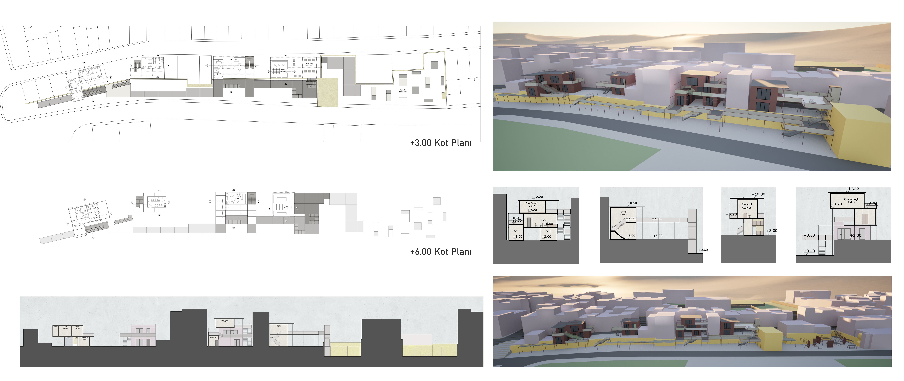
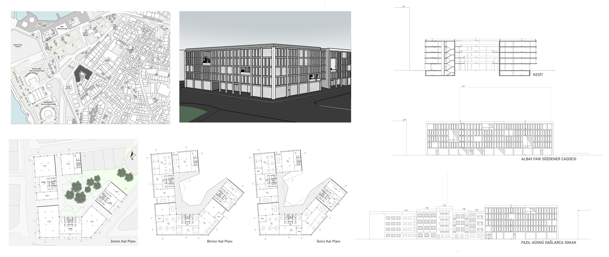
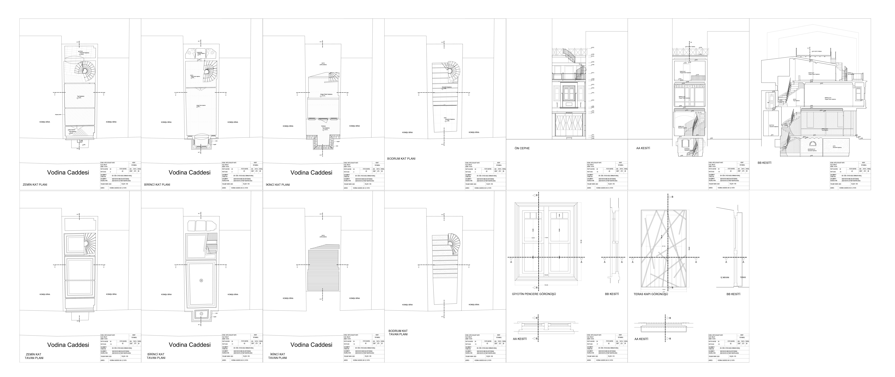
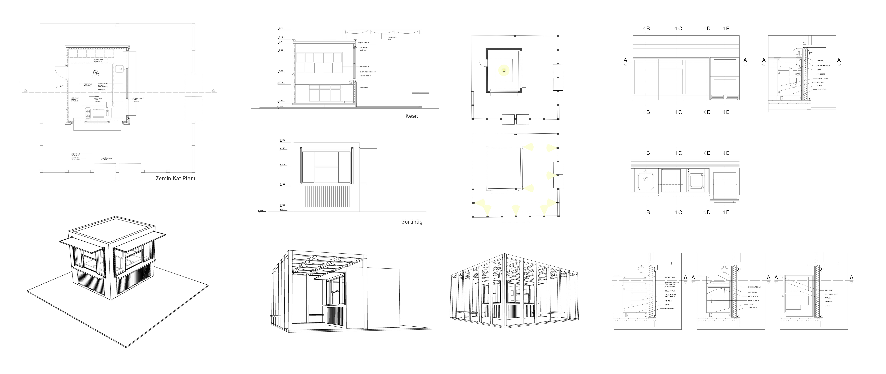

- Balat'ta Sanatçı Değişim Programı
Çalışma alanı Balat’ta Haliç Surları, sur burcu ve sur kaleleri kalıntılarının bulunduğu bir yapı adasıdır. Yapı adasının yatay eksende ortasından geçen surlar, istinat duvarı görevi görürler ve burada yaklaşık üç metre kot farkı bulunmaktadır. Sirkülasyon ve ziyaret aksı bir iskelet ile sağlanmaktadır. Bu iskelet, ziyaretçilerin yer yer altından yer yer üstünden yürüyebildikleri bir yol ve taşıyıcı görevini görmektedir.

- Kadıköy'de Ofis
Proje alanı Kadıköy rıhtımın silüetini oluşturan yapı adalarından bir tanesidir. Yapı adasında bitişik nizam ve ayrık nizamda apartmanlar bulunmaktadır. Fazıl Hüsnü Dağlarca Sokağı’ndaki nitelikli apartmanların silüeti korunarak yapı adasına yerleşilmiştir. Cephede kolon, döşeme gib ielemanlar öne çıkarılak okunması planlanmıştır. Zeminde boşluklar açılarak sokak ve avlu ilişkisi kurulmuş ve geçiş sağlanmıştır.

- Balat'ta Kafe Rölövesi
Balat’ta Vodina Caddesi üzerinde bulunan Artocalist Kafe’nin rölövesidir.2 katlı ahşap yapının zemin kat, birinci kat,ikincikat,teras ve bodrum katplanları, tavan planları, iki kesiti, ön cephesinin rölövesi alınmıştır.Yapıya özgün bir kapı ve pencerenin detay çizimi yapılmıştır.

- Üsküdar'da Kiosk
Kiosk/Büfe projesinin Üsküdar'da yapılması uygun görülmüştür. Çevresinde ahşap iskelet büfe için mekan oluşturma, sirkülasyonun sağlanması ve oturma alanları için yarı mahremiyet sağlama işlevleri için konmuştur. Proje dahilinde büfe tasarımı, aydınlatma planları ile mutfak tezgah detayları yapılmıştır. Yalın bir görüntü ile yapının çevre ile uyum sağlaması hedeflenmiştir.
